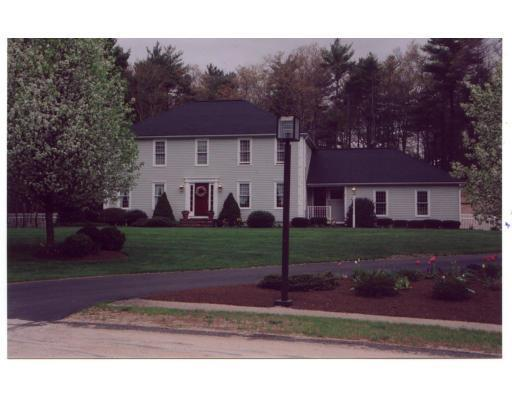
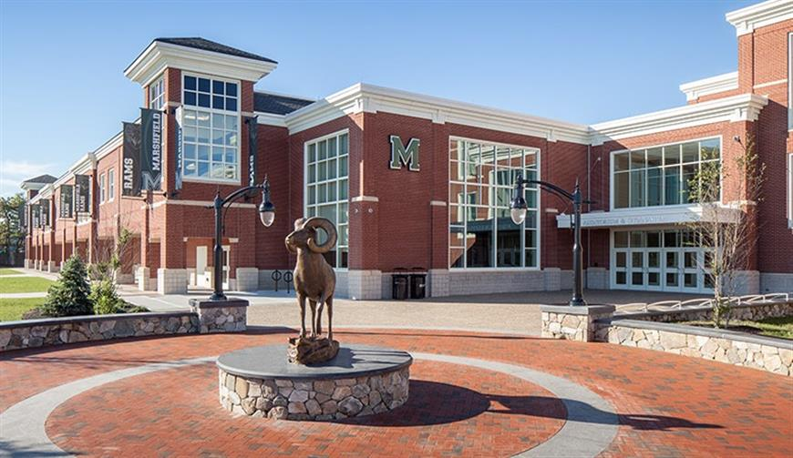
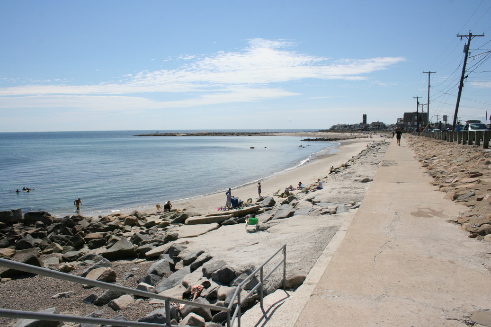
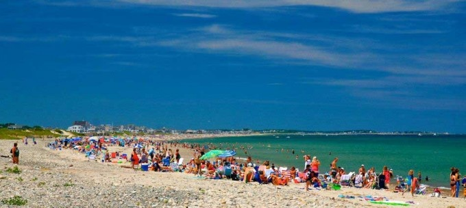

I was born in Fort Lauderdale Florida on March 11th, 1998. My family and I lived right outside of Fort Lauderdale in a town called Coral Springs. We lived there for about a year after I was born so I dont remember much about living there. Because of work, my dad had to relocate to the Boston location and so that is when I moved to my home in Marshfield, Massachusetts. Marshfield is a small beach town of about 25,000 people, and 35,000 people during the summer. Marshfield is home to a lot of cool things (besides me). For example Steve Carell owns the Marshfield Hills General Store which has been featured on the Ellen Degeneres show! Along with Steve Carell living in Marshfield, Steven Tyler and his other bandmates own property in Marshfield as well. I love Marshfield because of everything it has to offer; beautiful beaches, amazing sunrises, great restaurants, and home to all of my best friends. Below are some pictures in my town. Click here to return to the homepage!

